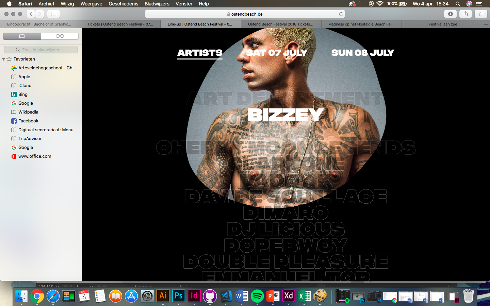
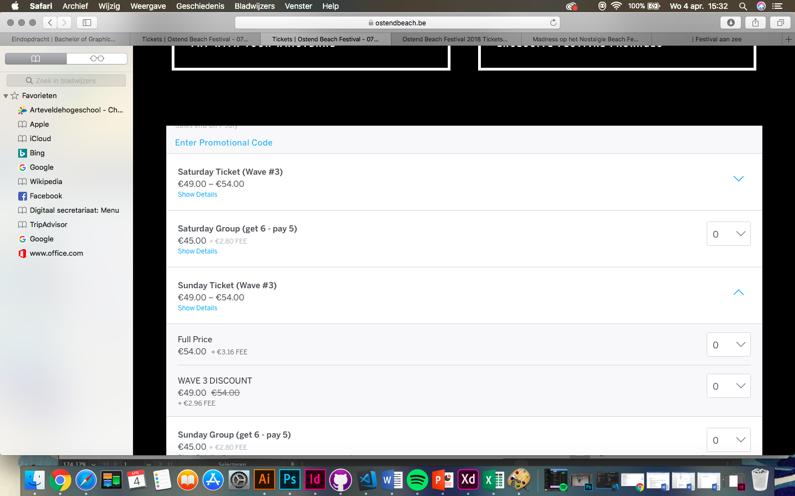
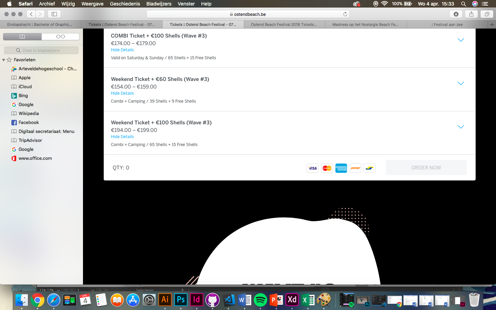
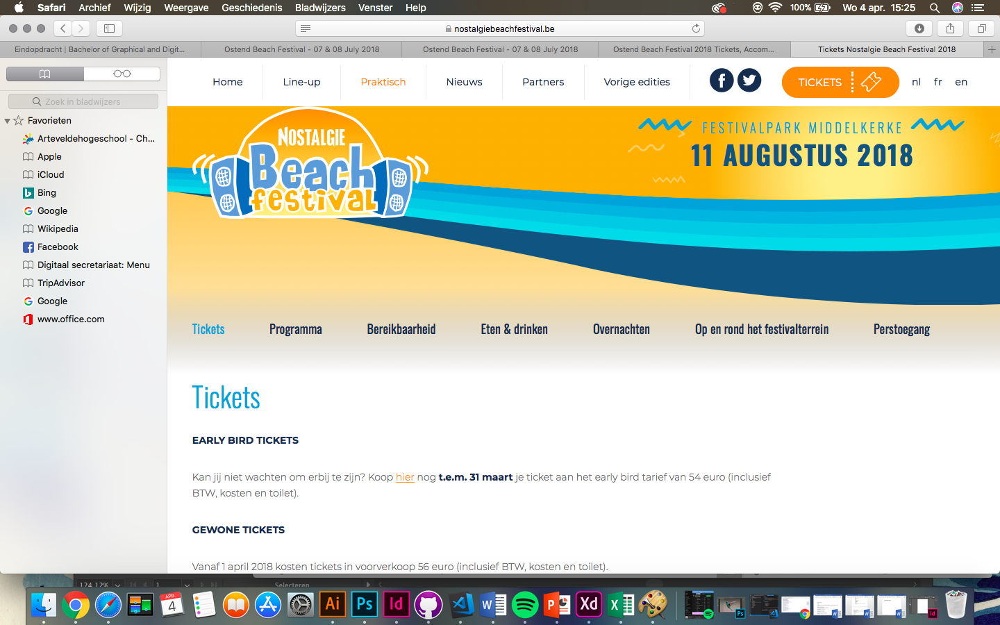
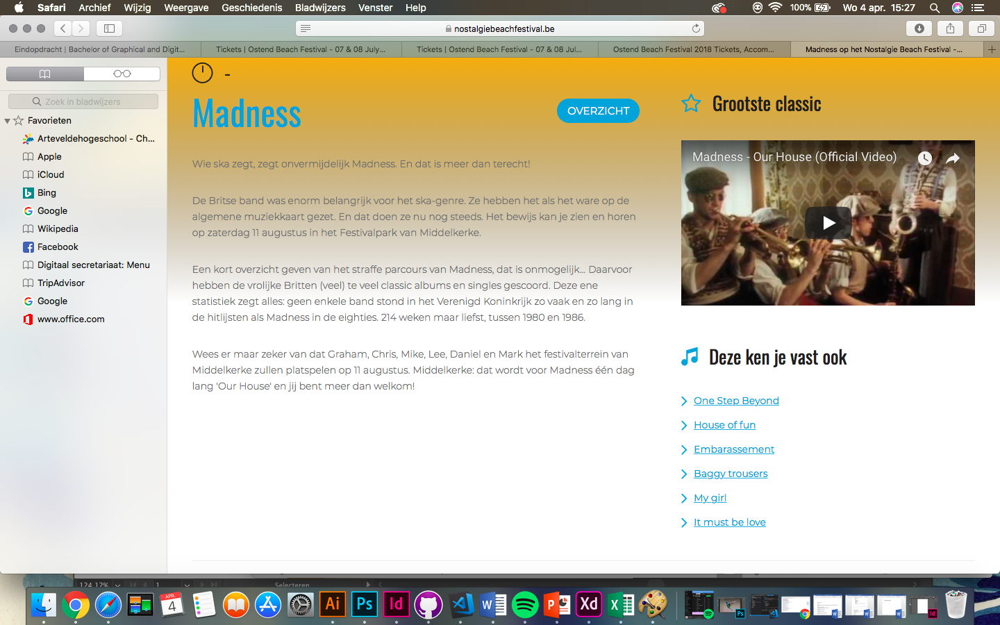
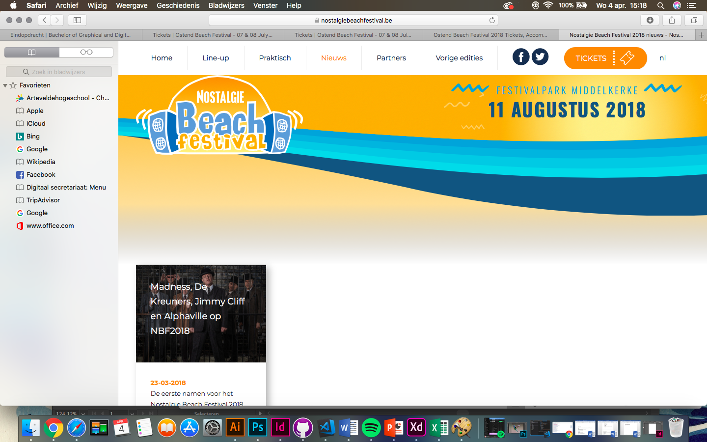
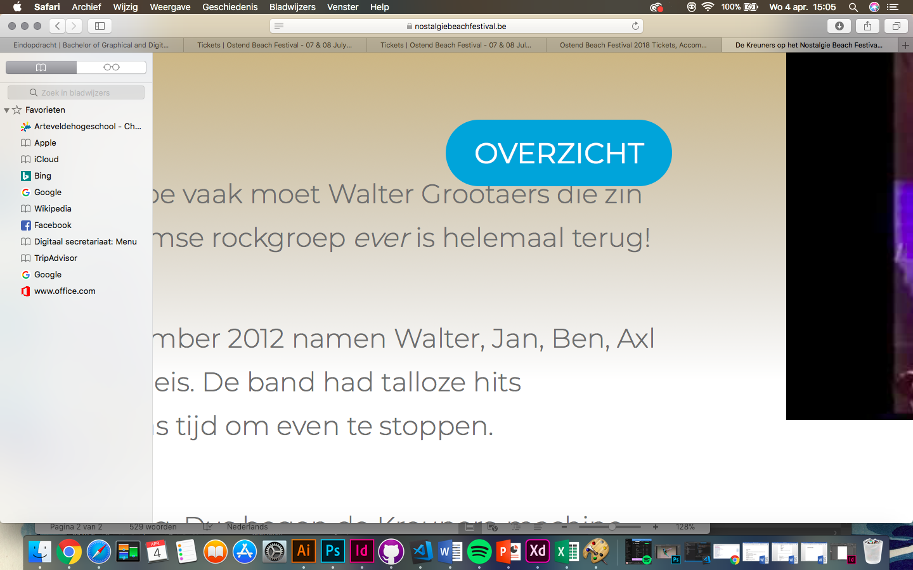
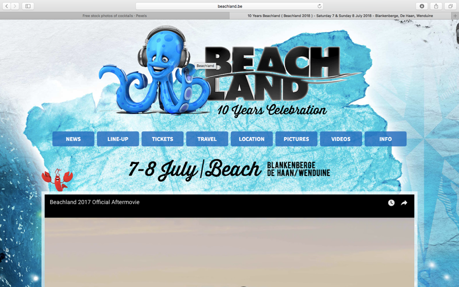
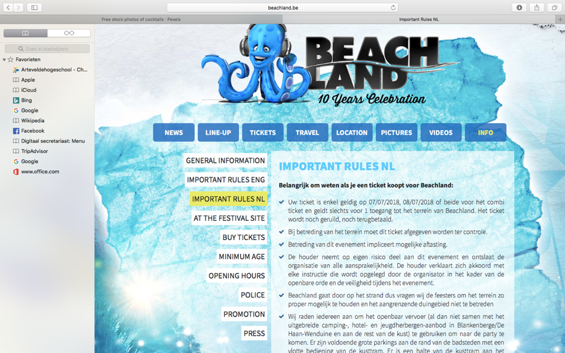
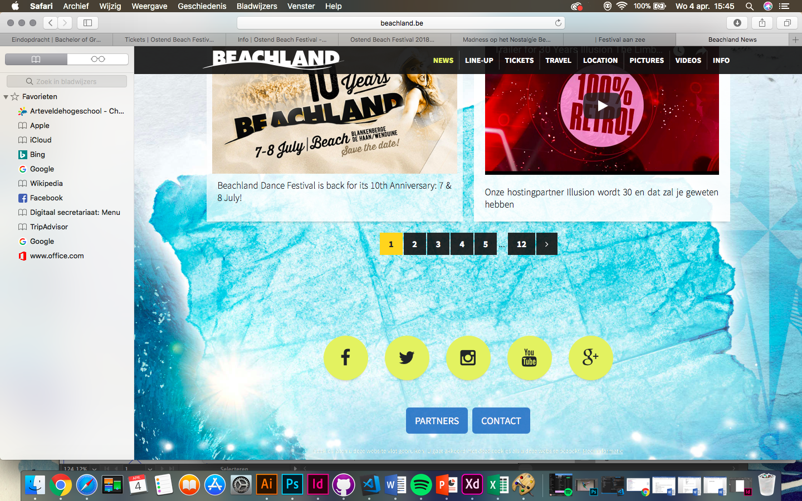

Concurrentie analyse
Concurrent 1 : www.OstendBeach.be
Positief +
- Er zit een goede structuur in de website. Over het algemeen werkt de site vlot en is hij overzichtelijk.
- De navigatie is zeer gestructureerd, de vette letters staan mooi gestructureerd naast elkaar.
- Er zijn 2 homeknoppen: je kan kiezen tussen ‘home’ of het icoon van de octopus.
- De line-up is heel origineel. Als je met je cursor over de artiestennaam gaat, verschijnt er een foto van de artiest op de achtergrond.
- Er is voldoende beeldmateriaal. Je krijgt een duidelijk beeld hoe het er allemaal uit zal zien.
- Grafisch correct opgemaakt, ze maken gebruik van een eigen huisstijl.
- De site is up to date.
- Bij ‘info’ staat alles heel duidelijk gestructureerd en vind je makkelijk wat je te weten wil komen.
- Er is een link met Festicket, dit is een handige tool om tickets aan te kopen.
- Er zijn verschillende manieren om op Social Media te volgen.

Negatief -
- De site is Engelstalig maar het festival vindt wel in België plaats. Er is nergens een functie te bespeuren om de taal aan te passen.
- Het systeem om tickets aan te kopen vind ik niet echt overzichtelijk. Het is moeilijk om te vergelijken omdat er te veel keuze is. Je moet continue scrollen om te zien wat de beste optie zou kunnen zijn. Als je je tickets wilt betalen, moet je helemaal onderaan klikken. Ik zou dit systeem iets duidelijker maken en ervoor zorgen dat het zeer duidelijk is wat je bestelt en wat je precies dan betaalt. Een winkelmandje zou een optie kunnen zijn om dit te verbeteren.
- Een helpdesk zou wel handig zijn voor eventueel verloren voorwerpen of andere zaken.
- Het is een cashless festival met een een bandjesmethode. Ik zou er nog ergens op een duidelijke manier vermelden dat je nergens op het festival met cash kan betalen.
- Af en toe staan er hele grote afbeeldingen tussen waardoor je denkt dat er niks meer onder zal staan van informatie. Toch staat er nog tekst onder deze afbeeldingen, zo heb je niet alle info mee. Het zou beter zijn om de tekst altijd boven de afbeelding te plaatsen.
- De logo’s van de sponsors vallen niet goed op omdat ze in zwart/wit staan. Ik zou de originele kleur van het logo van elke sponsor behouden, zo maak je de sponsors meteen herkenbaar.


Concurrent 2:www.Nostalgiebeachfestival.be
+ positief
- De knop van de ‘Tickets’ vind ik goed en duidelijk.
- Het doelpubliek is ruim en je kan selecteren in welke taal je de site wil lezen.
- Bij de vorige edities vind je filmpjes en foto’s die je kunt bekijken. Met beelden en videomateriaal weet je al direct weet welke sfeer het festival zal hebben.
- Bij de line- up staan 4 artiesten. Als je klikt op een artiestnaam krijg je enorm veel informatie over de band zelf en dat vind ik wel tof. Hun grootste hit kan je bekijken in een filmpje aan de rechter zijkant. Daaronder nog een verwijzing naar ‘deze ken je vast ook’: enkele andere liedjes die gelinkt zijn naar YouTube. Zo kan je vooraf al enkele liedjes beluisteren van bekende of minder bekende artiesten.
- Er wordt een kleurenpalet gebruikt die steeds herhaald wordt, zo blijf je in dezelfde sfeer.
- Bij ‘praktisch’ hebben ze nog eens gebruik gemaakt van een navigatiebalk en dat maakt het allemaal nog duidelijker. Er staat bij elk navigatieonderdeel een goede uitleg bij.


Negatief -
- De website is bedoeld voor een iets ouder doelpubliek.
- In de navigatiebalk staat alles wat er moet in staan. Voor mezelf is de link naar ‘partners’ en ‘vorige edities’ overbodig. Ik zou dit niet in de navigatiebalk plaatsen maar ergens anders op de site. De sponsors kunnen ook onderaan de pagina vermeld worden.
- De iconen van Social Media staan zowel bovenaan in de navigatiebalk als onderaan in de homepage. Ik zou de iconen van Facebook en Twitter enkel onderaan zetten.
- Als je bij ‘line-up’ op een artiest klikt, bijvoorbeeld ‘De Kreuners’, is er een knopje om terug naar het overzicht te gaan. De tekst staat echter tegen de eerste alinea.
- Als je op ‘nieuws’ klikt merkte ik op dat rechts boven de taalaanpassing is verdwenen.


Concurrent 3: www.Beachland.be
Positief +
- Eerst en vooral krijg je op de homepage een leuke aftermovie die je al direct zin geeft in een feestje.
- De line-up maakt een goed onderscheid tussen zaterdag en zondag. Ze geven ook een overzicht van alle artiesten die zullen optreden en op welk podium je hen terugvindt.
- Als je op ‘artiesten’ klikt, krijg je wat extra uitleg. Je wordt ook direct doorverwezen naar de eigen site van de artiest, hun facebook- of instagrampagina.
- Het is altijd leuk om even naar de foto’s en video’s te kijken.
- Onderaan zijn ze via talrijke Social Media te bereiken.
Negatief -
- Er is niet meteen een homeknop dus het was even zoeken om terug te keren. Uiteindelijk heb ik het dan toch gevonden en moet je bovenaan op het logo klikken.
- Het nieuwsoverzicht is heel druk. Er zijn al meer dan 12 pagina’s aan nieuws. Dat lijkt me toch wel veel.
- De website is niet up- to-date. Er staat nog heel veel oud nieuws op zoals de line-up van vorig jaar en dat maakt het wel verwarrend.
- Het is een hele drukke site om te bekijken. Het is vooral door de achtergrond die heel veel herhaald wordt.
- Er zijn heel veel mogelijkheden om tickets te bestellen waardoor het echt zoeken is. Ik zou hier iets meer structuur is steken.
- De site is Engelstalig en niet aan te passen naar Nederlands of andere talen.
- Bij ‘info’ en ‘important rules’ staat er 1 tekst in het nederlands. Het zou beter geweest zijn als je de volledige pagina kunt vertalen.
- In de navigatiebalk staat ‘travel’ ik zou dit eerder bij info gestoken hebben.


